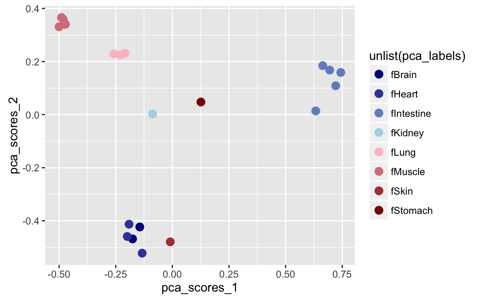

Chapter 3 Demonstrations
3.1 BEDtools DNase I
bed_jaccard can also be used for the large-scale comparison of many datasets. As shown in the BEDtools tutorial (http://quinlanlab.org/tutorials/bedtools/bedtools.html), we can measure the similarity of DNaseI hypersensitivity sites for 20 fetal tissue samples.
This data was taken from Maurano et al. Systematic Localization of Common Disease-Associated Variation in Regulatory DNA. Science. 2012. Vol. 337 no. 6099 pp. 1190-1195. (www.sciencemag.org/content/337/6099/1190.short).
library(gplots)
#>
#> Attaching package: 'gplots'
#> The following object is masked from 'package:IRanges':
#>
#> space
#> The following object is masked from 'package:S4Vectors':
#>
#> space
#> The following object is masked from 'package:stats':
#>
#> lowess
library(dplyr)
library(stringr)
library(ggplot2)
library(RColorBrewer)
file_names <- list(
'fBrain-DS14718.hotspot.twopass.fdr0.05.merge.bed.gz',
'fBrain-DS16302.hotspot.twopass.fdr0.05.merge.bed.gz',
'fHeart-DS15643.hotspot.twopass.fdr0.05.merge.bed.gz',
'fHeart-DS15839.hotspot.twopass.fdr0.05.merge.bed.gz',
'fHeart-DS16621.hotspot.twopass.fdr0.05.merge.bed.gz',
'fIntestine_Sm-DS16559.hotspot.twopass.fdr0.05.merge.bed.gz',
'fIntestine_Sm-DS16712.hg19.hotspot.twopass.fdr0.05.merge.bed.gz',
'fIntestine_Sm-DS16822.hotspot.twopass.fdr0.05.merge.bed.gz',
'fIntestine_Sm-DS17808.hg19.hotspot.twopass.fdr0.05.merge.bed.gz',
'fIntestine_Sm-DS18495.hg19.hotspot.twopass.fdr0.05.merge.bed.gz',
'fKidney_renal_cortex_L-DS17550.hg19.hotspot.twopass.fdr0.05.merge.bed.gz',
'fLung_L-DS17154.hg19.hotspot.twopass.fdr0.05.merge.bed.gz',
'fLung_L-DS18421.hg19.hotspot.twopass.fdr0.05.merge.bed.gz',
'fLung_R-DS15632.hotspot.twopass.fdr0.05.merge.bed.gz',
'fMuscle_arm-DS19053.hg19.hotspot.twopass.fdr0.05.merge.bed.gz',
'fMuscle_back-DS18454.hg19.hotspot.twopass.fdr0.05.merge.bed.gz',
'fMuscle_leg-DS19115.hg19.hotspot.twopass.fdr0.05.merge.bed.gz',
'fMuscle_leg-DS19158.hg19.hotspot.twopass.fdr0.05.merge.bed.gz',
'fSkin_fibro_bicep_R-DS19745.hg19.hotspot.twopass.fdr0.05.merge.bed.gz',
'fStomach-DS17659.hg19.hotspot.twopass.fdr0.05.merge.bed.gz')
DNase_files <- lapply(file_names, function(x) {
read_bed(paste0('data/dnasei/', x), n_fields = 4)
})We can then use the following function to generate a 20x20 table containing a Jaccard statistic for each of the 400 pairwise tests.
jaccard_func <- function(list_in) {
output <- lapply(list_in, function(x) {
res <- lapply(list_in, function(y) {
jac <- bed_jaccard(x, y)
select(jac, jaccard)
})
vec <- 1:length(res)
for (i in 1:length(res)) vec[i] <- unlist(res[i])
vec
})
jac_table <- matrix(nrow = length(output), ncol = length(output))
for (i in 1:length(output)) jac_table[,i] <- unlist(output[i])
data.frame(jac_table)
}
jaccard_table <- jaccard_func(DNase_files)This next part will simplify our original list of file names to generate labels for the table.
col_names <- lapply(file_names, function(x) str_split(x, '\\.', 2)[[1]][[1]])
colnames(jaccard_table) <- col_names
rownames(jaccard_table) <- col_namesblues <- colorRampPalette(c('dark blue', 'light blue'))
reds <- colorRampPalette(c('pink', 'dark red'))
pca_labels <- lapply(file_names, function(x) str_split(x, '_', 2)[[1]][[1]])
pca_labels <- lapply(pca_labels, function(x) str_split(x, '-', 2)[[1]][[1]])
pca <- princomp(jaccard_table)
plot_data <- data.frame(pca$scores[,1], pca$scores[,2])
colnames(plot_data) <- c('pca_scores_1', 'pca_scores_2')
ggplot(plot_data, aes(pca_scores_1, pca_scores_2, color = unlist(pca_labels))) +
geom_point(size = 3) +
scale_color_manual(values = c(blues(4), reds(4)))

Figure 3.1: PCA analysis of Jaccard scores
heatmap.2(as.matrix(jaccard_table),
col = brewer.pal(9,"Blues"),
#margins = c(14, 14),
density.info = "none",
#lhei = c(2, 8),
trace = "none")